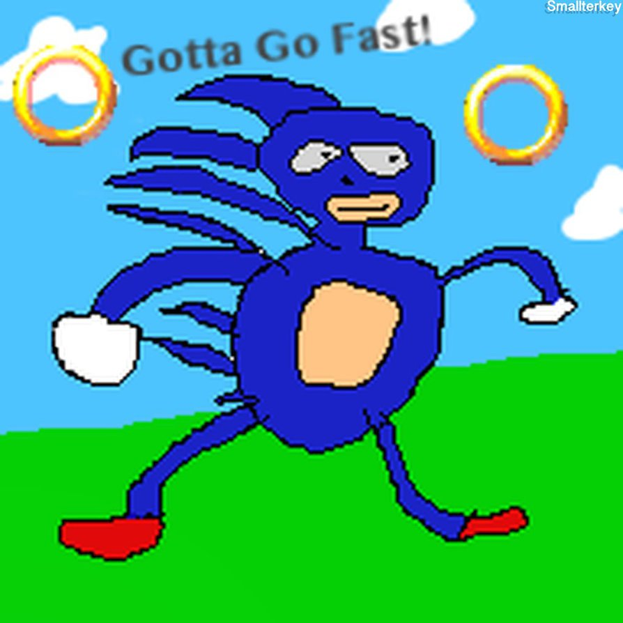

|
Hi,my name is Law siu yin

I love playing racing game since i was little, the game impressed me most is GranTurismo.When this game came out, Toyota supra is the theme car. When i saw this car, it become my dream car immediately.Also, it the reason i decided to make a website/webpage with this car too! Hope you guys like it! If you have any enquiry, please feel free to contact me at: 170313580@vtc.edu.hk |
Uganda Knuckles Do you know da wae?
Do you know da wae to the pricenes? Ugandan Knuckles is the nickname given to a depiction of the character Knuckles from the Sonic franchise created by YouTuber Gregzilla, which is often used as an avatar by players in the multiplayer game VRChat who repeat phrases like “do you know the way” and memes associated with the country Uganda, most notably the film Who Killed Captain Alex? and Zulul. The character is associated with the expression “do you know the way”, which is typically spoken in a mock African accent and phonetically spelled as “do you know de wey.” Along with the question in hand a VR user will start making “spitting” sounds, followed by a “mob like” mentality. Unsuspecting VRchat users fall victim to Ugandan Knuckles “promise” of showing “de wey”. Only followed by a mass trolling. If you want to find me, go find thepirences
|